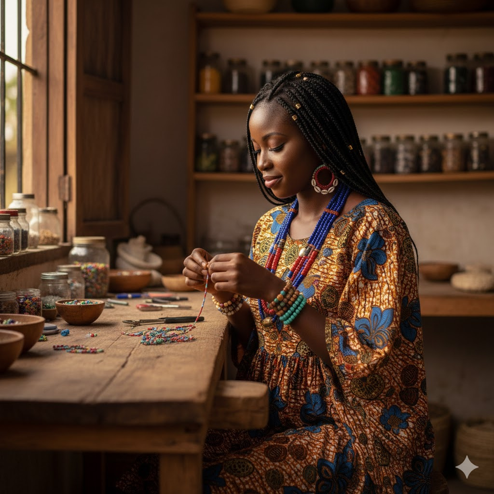

L'Histoire de Véro
Passionnée par l'artisanat africain depuis mon enfance, j'ai créé Les Perles de Véro pour partager ma passion des bijoux traditionnels revisités avec une touche moderne. Chaque pièce est confectionnée avec amour dans mon atelier, en respectant les techniques ancestrales tout en les adaptant au style contemporain.
Nous travaillons directement avec des artisans locaux, garantissant l'authenticité de chaque création et contribuant à l'économie locale. Nos bijoux ne sont pas seulement des accessoires, ce sont des œuvres d'art qui racontent une histoire, celle de l'Afrique et de ses traditions.
En savoir plus sur nous